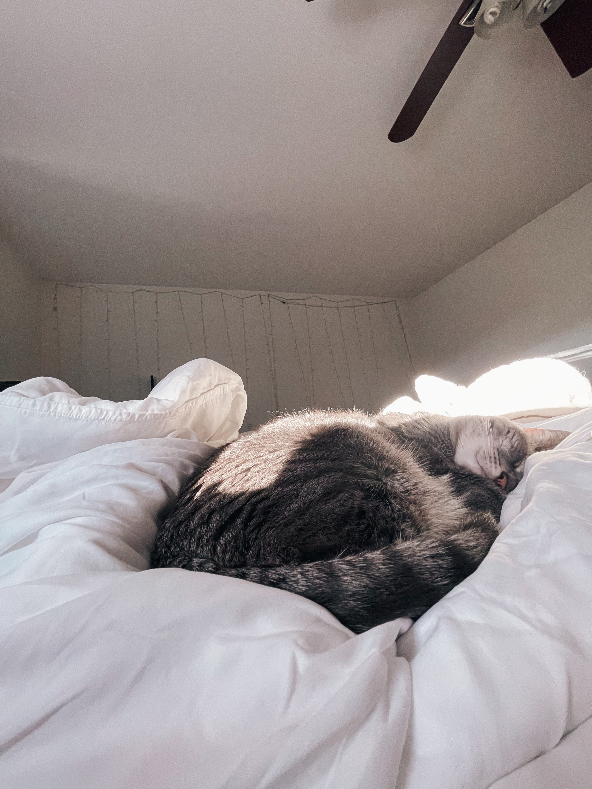

A Little Cat Nap!
This is a cute picture of little baby olive taking a nap in the sun.
Sometimes when taking a nap, olive likes to curl up in a sweatshirt.
Introducing Olive, the best cat to ever walk this earth. She is so cute, but don't just walk up and touch her, she knows her value and will slap you!
This is a cute picture of little baby olive taking a nap in the sun.
Sometimes when taking a nap, olive likes to curl up in a sweatshirt.
This is a picture of Olive when she is just waking up from her cat nap.
Sometimes when Olive wakes up she gives a big yawn and makes a squeak!
This is Olive purring in her Moms arm.
Fun fact: Olives birth mother was Marissa Avon, contrary to popular belief that she was adopted.
This is Olive shining bright during golden hour.
Take notice to how pretty her eyes are!